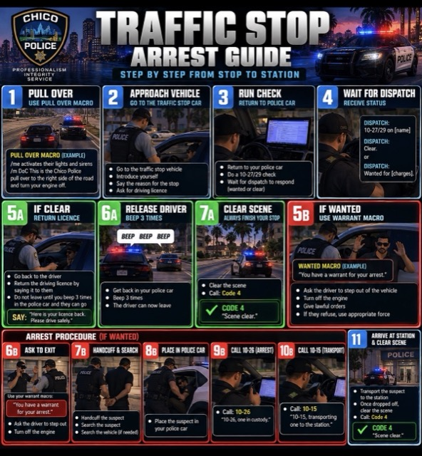
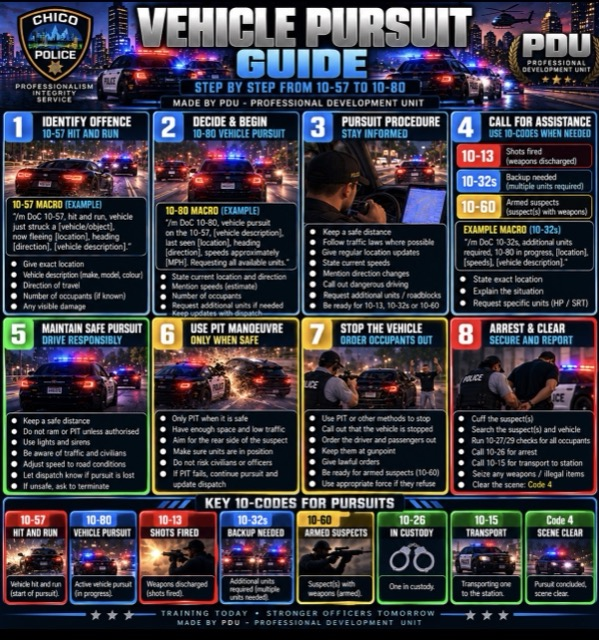
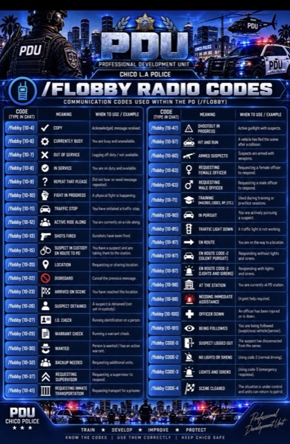
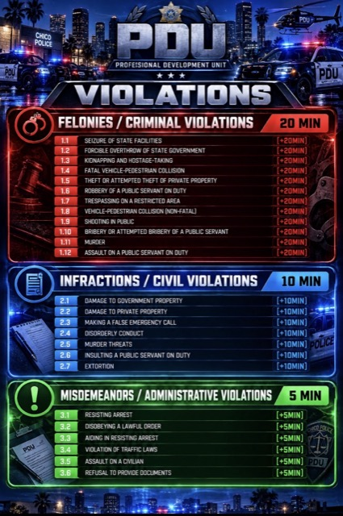
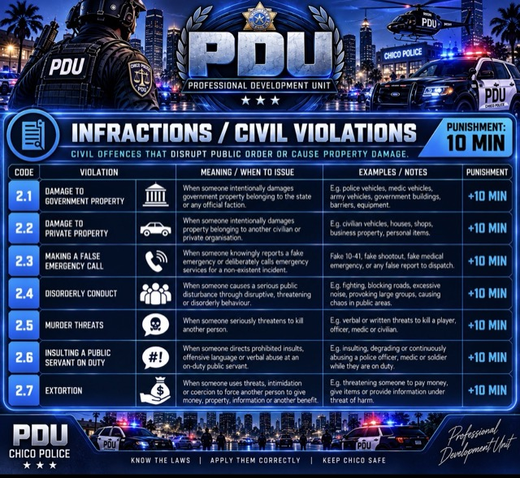
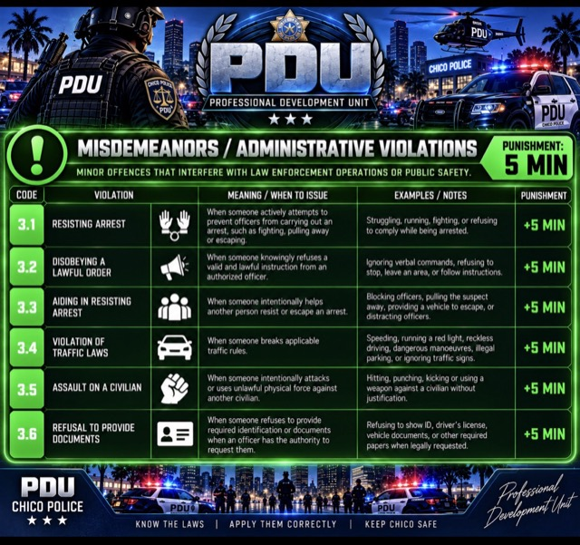
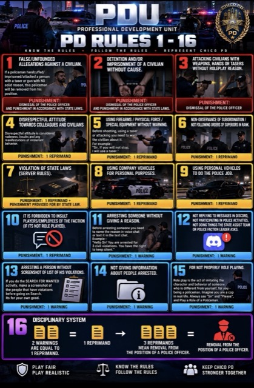
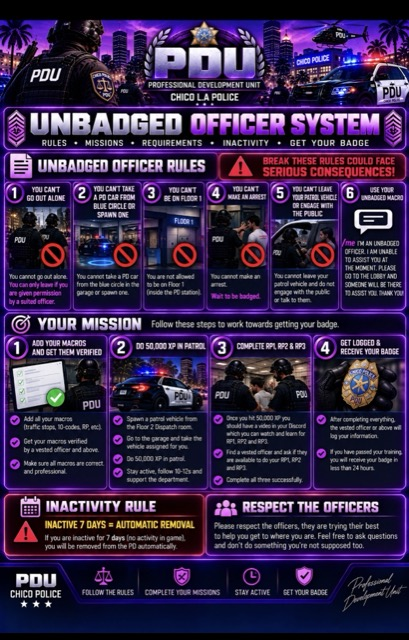

PDU posters
Pictures
Every PDU poster. Tap one to see it full size, or download it to keep.


















PDU posters
Every PDU poster. Tap one to see it full size, or download it to keep.







